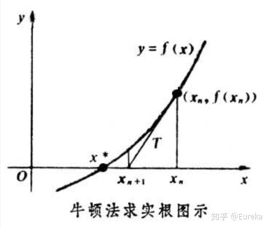
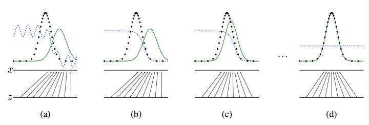

优化方法
常用的优化器有哪些？
一般框架，在每个epoch进行如下
- 计算目标函数关于当前参数的梯度：$g_t = \nabla f(w_t)$
- 根据历史梯度计算一阶动量和二阶动量：$m_t = \phi(g_1, \cdots, g_t), V_t = \Phi(g_1, \cdots, g_t)$
- 计算当前时刻的下降梯度: $\eta_t = \alpha(V_t)^{-\frac{1}{2}}m_t$
- 根据下降梯度更新 $w_{t+1} = w_t - \eta_t$
- SGD: 没有考虑历史梯度
- SGD with momentum: $m_t = \beta m_{t-1} + (1-\beta)g_t$
- NAG：牛顿加速 $g_t = \nabla f(w_t - \eta_{t-1})$ 即假设已经更新到了那里
- AdaGrad: 加入二阶动量$V_t = \sum_{t}g_t^2$ 在梯度变化大的时候更新就小一些
- AdaDelta：二阶动量 with momentum: $V_t = \beta V_{t-1} + (1-\beta) g_t^2$
- Adam：把momentum的一阶和二阶全部考虑进来
- NAdam：结合Adam和NAG别，考虑未来时刻，也考虑momentum
常用的损失函数有哪些？
 对于分类问题有：log loss: $\log(1+\exp(-f\cdot y))$, focal loss, kl divergence entropy loss: $-\log((1+f\cdot y)/2)$, exponential loss 和 hinge loss: $\max(0, 1-f\cdot y)$
对于分类问题有：log loss: $\log(1+\exp(-f\cdot y))$, focal loss, kl divergence entropy loss: $-\log((1+f\cdot y)/2)$, exponential loss 和 hinge loss: $\max(0, 1-f\cdot y)$
 对于回归问题有：mse: $(f-y)^2$, mean absolute error: $|f-y|$, huber loss在$|f-y|$小的地方用MSE，在$|f-y|>\delta$的地方，用对异常值不那么敏感的$l_1$loss: $2\delta|f-y|-\delta^2$
对于回归问题有：mse: $(f-y)^2$, mean absolute error: $|f-y|$, huber loss在$|f-y|$小的地方用MSE，在$|f-y|>\delta$的地方，用对异常值不那么敏感的$l_1$loss: $2\delta|f-y|-\delta^2$
梯度下降法和牛顿法（拟牛顿法暂略）
- 批量梯度下降
batch gradient descent使用所有样本，stochastic gradient descent随机选择一个样本求梯度，mini-batch gradient descent是前两者的折中，可以调整 牛顿法可以求方程的根，根据泰勒近似，因为我们希望找到一阶梯度为$0$的参数值：$w' = w - \nabla_wf(w)(\text{Hess}_w)^{-1}$ (当学习率为1，梯度下降的公式是$w' = w - \nabla_wf(w)$)
 牛顿法：不是朝梯度下降最快的方向更新，而是更进一步考虑到了梯度的变化，收敛也是局部的，并且要求可逆的二阶矩阵正定，否则可能朝梯度增大方向更新
- 批量梯度下降
什么是生成模型什么是判别模型？
判别模型是在给出一个手写数字的部分图片信息下，判断这个数字是$0-9$的概率生成模型则更关注联合概率而非条件概率，比如识别这个图和数字分别是$0-9$的联合概率，比如手里有大量这个人的手写数字的笔迹，通过一个生成器来模仿这些笔迹
生成模型：
蓝色虚线代表判别器分类标准，黑色虚线代表真实样本分布情况，绿色实线代表生成样本的分布，$Z$代表随机噪音向量，是生成器的输入
- $l_1$和$l_2$正则分别有什么特点？为何$l_1$稀疏？
p-norm: $\| x\|_p = \left(\sum_i^n |x_i|^p\right)^{\frac{1}{p}}$- $l_1$损失函数更稳定（异常值处理），但导数不连续，不好求最优解。所以
huber损失函数完美结合了$l_1$和$l_2$，使得他既不对异常噪音敏感，也不是一成不变的梯度值，梯度会随着损失的减小而减小，从而不会错过最优点，唯一的问题就是他有一个超参数阈值$\delta$